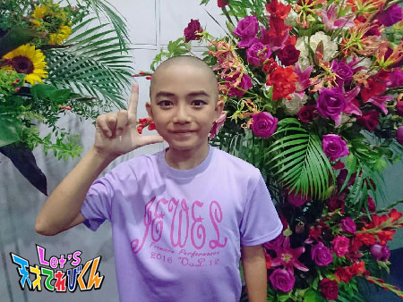

<<2016年8月 | トップページ | 2016年10月>>
2016年9月
○○県の思い出［柿澤仁誠］
こんにちは。にまです。
今回のテーマ「 ○○県の思い出 」
いろいろな都道府県で思い出がたっぷりあるんですが、
少し前に行ったばかり！！
『Let's 天才てれびくん』の名古屋イベントの
愛知県の思い出を書きたいと思います！
このイベントでは、
大野課長
飯島あかりせんぱい！
小澤りゅうしんせんぱい！
久保みのりちゃんと一緒に、名古屋へ行ってきました！
ぼくにとって初めてのステージだったので、正直に言うと、
すごくきんちょうしちゃいました （汗）
とにかくがんばろう！やるしかないとドキドキしていたら、
イベントが始まる前に、「 たりないドアー 」の曲がながれて、
そのとき！！！！
会場からみんなの歌ってる声♪♪
が聞こえてきて、すっっっごくうれしかったです！
イベントのときも、
みんなダンスが上手くて、いっしょにおどってくれて楽しかったです！
ぼくは、こんなに遠いところまで来ても、
いっしょに歌ったりダンスしてくれる茶の間戦士のみんながいる、と思うと感動しました。
名古屋はおいしい食べものもたくさんあって、
てれび戦士のなかまと、おいしいものを食べました！
そして、たくさんあそびました (＾o＾)/
楽しすぎて写真をとるのを忘れたくらいです （＾o＾;;）
飯島せんぱいに写真をもらいました （汗）
これがぼくの愛知県の思い出でした！
投稿者:柿澤仁誠 | 投稿時間:18時45分 | カテゴリ：てれび戦士 | 固定リンク
○○県の思い出［林武尊］
こんばんは～ 林武尊です。
ただいま、めちゃくちゃ部活を頑張っています！
大会に出るためには、学校内で勝ち進み、
ランキング上位に上がらなければならないのです。
そのため、毎日毎日、先輩や同級生と練習をしています。
テニス、とっても楽しい (*^^)v
それでは本題。
今回は“ ○○県の思い出 ”ですね。
僕が一番思い出に残っているのは・・・・・
ずばり！鳥取県です。
どちゃもん探しには行っていないけど、
小さい頃によく遊びに行きました。
一番印象に残っているのは、水木しげるロード。
下駄を買ってもらったり、記念館で妖怪の漫画をみたり。
通りにはたくさんの妖怪の銅像があるし、
スタンプラリーを完成させて認定証をもらったりして、
たくさん遊べて、とっても楽しい場所です。
お店に入ってガラス細工を見ていたら、
手がすべって落としてしまったことも覚えてます (‘Д’)
花のテーマパークにも毎年行きます。
自然がたくさんあってすごくきれい。
鳥取、また行きたいな～
投稿者:林武尊 | 投稿時間:18時54分 | カテゴリ：てれび戦士 | 固定リンク
○○県の思い出［皆川寧々］
みっなさ～ん、
こんばんは、＊寧々＊です (｡・u・｡)/☆
長かった夏もあっという間に終わって、
季節は秋になりますね！
秋といえば。。。
「 読書の秋！ 」「 食欲の秋！ 」「 スポーツの秋！ 」
学校の行事も、運動会、連合運動会、学芸会etc・・・
目白押しでワクワクします！
さて、今回のテーマは
『 ◯◯県の思い出 』！！
近いのになかなか行かない
『 埼玉県の思い出 』です(*^u^*)/
夏休みに埼玉県川越市に行ってきました。
江戸時代に城下町として栄えた街並みが残る川越市。
お母さんが「 せっかくだから浴衣（ ゆかた ）を着て行ったら 」と言い出し、
祖母が浴衣や帯を探して着付けてくれました。
『 城下町×浴衣 』で江戸時代にタイムトリップした気分が味わえて、
テンションが上がりました↑↑q(｡・u・｡)p↑↑
お昼はうなぎを食べました。
うなぎ屋さんででてきた、うなぎの骨のおつまみがすごくおいしくて
たくさん食べてしまいました笑
お昼のあとは、駄菓子屋横丁に行きました。
たくさんの駄菓子屋さんが並んでいて、
あっちに行ったりこっちに行ったり、
目移りしてしまいました (((●´u｀●)))

↑↑↑
途中、江戸飴細工（ あめざいく ）に挑戦してみました。
ストローの先についている飴をふくらますのですが、
ゆっくり、優しく吹いてふくらます！
というのがなかなか難しくて、
結果、これ以上ふくらみませんでした笑
上手な人は風船みたいに
顔の大きさくらいまでふくらませるみたいです！スゴイ！
でも、一番思い出に残っているのは、
川越氷川神社に行きお参りをして、
たくさんの風鈴を見たことです。
色とりどりの風鈴が
｢ リリリーン。リリリリーン。 ｣
と音をたててゆらゆらしていた風景が
とても心に残っています。
風が吹くたびに風鈴につるされた短冊が
ひらひらと動いていて、それがまたもぅ～きれいでした！
おうちにも風鈴が欲しくなり、
限定のオレンジ色の風鈴を買ってもらいました。

駄菓子屋横丁から氷川神社までの道のりは
意外と長くて、とても暑い日だったので、
神社で食べたかき氷も思い出です。
上に風鈴の絵が描いてあるおせんべいがのっていてかわいくて、
とてもおいしかったです！！
今度は大好きなアニメの聖地巡りに、秩父や、
他県だと飛騨や琵琶湖にも行ってみたいなぁ
と夢がふくらみます (●・u・●)
Let's タイムトリップ
それでは＊寧々＊でした♪
投稿者:皆川寧々 | 投稿時間:18時45分 | カテゴリ：てれび戦士 | 固定リンク
○○県の思い出［小澤竜心］
こんにちは！竜心です。
夏が終わって、もう、秋ですねー。
今年の夏は秋田に行けなかったけど、
おじいちゃんから野菜がいっぱい届きました！
新鮮ですっごくおいしかったです。
夏まつりでは、初めてお手伝いをしました。
ご近所さんといろんなお話ができて、
お手伝いもほめられて、うれしかったです！
そして、NHK名古屋局のイベントに、
参加させていただきました！
会場ではたくさんのみなさんが応援してくださり、
心強かったです。
ありがとうございました！！
夏も思い出がたくさんできて、うれしいな～♪
ぼくの「 ○○県の思い出 」は『 山梨県 』です。
５年生のときに林間学校で山梨県に行って、
初めて学校の友達といろいろ過ごしました。
キャンプファイヤーや川遊び、
みんなで一緒にお風呂に入ったり、
山梨名物の「 ほうとう 」も作りました。
楽しかったな～～(≧▽≦)
朝早く起きて見た空の色も、忘れられません！
うっすらとした水色の上から、
うすーい紫がかかっていました。
キレイだったな～～・・・(*´ー｀*)
泊まるところは山にかこまれていて、
窓を開けると山のにおいがして、
鳥の鳴き声や川の音が聞こえてきて、
いやされました・・・(*´ー｀*)
『 山梨県 』は、自然がいっぱいで、
友達とたくさん話して仲良くなることができて、
とっても良い思い出になりました♪ヽ(´▽｀)/
投稿者:小澤竜心 | 投稿時間:18時45分 | カテゴリ：てれび戦士 | 固定リンク
○○県の思い出［稲垣芽生］
こんにちは～ (*^^)v
夏休みが終わり
学校が始まってすぐ
楽しみにしていた宿泊学習にいってきました。
友達と普段できないことをいろいろしました。
なかでも楽しかったのがキャンドルサービスでのこと。
サプライズで、先生方が
「 PERFECT HUMAN（ パーフェクトヒューマン )」を
思いっきり踊ってくれたことです。
面白くてたくさん笑った宿泊学習でした。
笑顔がいっぱいでした。
今回のテーマは「 ○○県の思い出 」です。
それはやっぱり！
てれび戦士になって初めて行った鳥取県！
“ ばばちゃん ”というお魚のことを聞いたとき
優しい人がたくさんで、みなさん明るく教えてくれました。
ばばちゃんもおいしかったよ～
また食べにいきたい！！
思い出すだけでワクワクする～。
（ ご当地キャラの ）トリピーのことはビックリしたけど・・・ (;_;
道の駅でたべた特産品のスイカのソフトクリーム！！
初めての感じで甘さが広がってすごくおいしかった～
鳥取砂丘はきれいで
思い出に残り、
今までとは違う特別な県になりました。
投稿者:稲垣芽生 | 投稿時間:18時45分 | カテゴリ：てれび戦士 | 固定リンク
○○県の思い出［飯島緋梨］
こんにちは
飯島緋梨です！
あっという間に夏休みが終わって
だんだん風が涼しくなってきて、
そろそろ秋になりますね。
秋にはおいしい食べものがいっぱい*\(^o^)/*
よーし！楽しみだぞ～！
さてさて！
今回のお題は
｢ 北海道での思い出 ｣です！！
私が北海道に行ったのは今から約２年前！
北海道どちゃもん、るるを探しに行きました。
広大な北海道の畑で収穫のお手伝いをさせてもらって
地元の人たちがすごく優しくしてくれて、
本当にお世話になりました (^^)
あんなに広い畑を見たのは初めてで、
すごく驚いたのを今でも覚えています (笑)
その後、農業高校で収穫した野菜を使って、
るるのために手作りピザを作って
るるに食べてもらいました (⌒▽⌒)
ピザは採りたての野菜が優しい味でおいしくて、
今まで食べたことのないピザでした
また食べたいな！！
博物館にも行きました。
とっても寒い体験ができるところがあって、
白熊ちゃんもいて北極にいるみたいな気分になりました。
北海道の名物“ カニ ”のオブジェも見に行きましたよ！
思い出すと楽しいことがいっぱいあったな～♪
次はみんなでまた行きたいなー！
皆さんにも心に残っている景色や、
行ってみたい場所はありますか？？
Let's 〇〇県の思い出！
投稿者:飯島緋梨 | 投稿時間:18時45分 | カテゴリ：てれび戦士 | 固定リンク
○○県の思い出［胡内奏芽］
こんにちわ！
胡内です。
夏休みが終わったばかりなのに早く夏休みにならないかなぁ～
と思ってしまいます（笑）
さて今回のテーマ「 ○○県の思い出 」ですが、
夏休みに『 ●●に行ってきた！ 』
て話も多いのでは？
ぼくの思い出県は
ズバリ秋田県！
お米がおいしかったり
きりたんぽがおいしかったり・・・
食べものばっかり （苦）
親戚のおうちへ遊びに行かせてもらったのですが
周りになにもない自然！！
駅までお迎えに来てもらって
おうちへ向かう車の窓からコレ！！
家がない！
空気もきれいで気持ちよかった！
一番は虫！
虫は虫でもデカイ！
夜にお父さんと森みたいな山に行ったら
こんなデカイカミキリムシ！
昼間の木にはコレ！
昼間も夜も
車の音とか音楽とかはなく
ひたすらに虫の鳴き声で
何だかすごいです！！！
予定があって見られなかったけど、
次回は大文字焼きも見てみたいです (*^^*)
そんな秋田の思い出でした！
それでは、レッツ！！！
投稿者:胡内奏芽 | 投稿時間:18時54分 | カテゴリ：てれび戦士 | 固定リンク
○○県の思い出［瀧澤翼］
こんにちは！
最近、夜に鈴虫が鳴いているのを聞くと、秋が感じられます。
瀧澤翼です！
先日、僕のかよっている学校の体育祭がありました。
僕の学校は、クラスが多いので
色分けが緑・黄緑・青・水色・赤・オレンジ・ピンク・黄色の８色もあるんです。
僕のクラスはピンク色で、とても団結力を強めて
競技をおこなうことができました！
とても楽しかったです *\(^o^)/*
さぁ、テーマは、「 ○○県の思い出 」ですね。
今回は、鳥取県の思い出を紹介しま～す！
ゲッ・ゲッ・ゲゲゲのゲ～♪
日本で一番有名な妖怪で、
NHKの朝ドラでもお馴染みのご存知【 ゲゲゲの鬼太郎 】。
その作者、水木しげるさんの出身地が、鳥取県なんです！
鬼太郎や仲間たちが町中いっぱいで、幻想的な場所でした。
こちらは、鳥取県の郷土芸能で【 麒麟獅子 （ きりんじじ ）】っていいます！
なんでもかまれると縁起がいいとのことで、頭をガブリ (⌒-⌒; )
とても神秘的な体験をさせていただきました。
鳥取県の皆さん、いい思い出をありがとうございました！
Let's 鳥取県！！
投稿者:瀧澤翼 | 投稿時間:18時45分 | カテゴリ：てれび戦士 | 固定リンク
○○県の思い出［黒川桃花］
こんにちは！！黒川桃花です！！
おしゃれなカフェで、おいしいもの食べました～
幸せいっぱいです (^^♪
写真の下のフレンチトーストは私が作りました！
家族にも好評でしたよ (^.^)
さて、今回のお題は、「 ○○県の思い出 」です！
私は、てれび戦士として初めて群馬県に行きました。
そこで、タグラグビーをしたのが、とーっても楽しかったです！！
一生懸命練習してトライしたときの爽快感が、忘れられません！！！
タグラグビーは、
タックルをしてケガする可能性も低いし、とっても楽しいので、
学校でタグラグビー部があったら、入りたいなぁと思いました♪
あと、群馬県の草津温泉では、ハンドベルをやりました。
そのあとに、湯もみ娘さんにお願いして
湯もみをやらせてもらいました！！
湯もみをする前はとても熱くて、
手を入れたら「 あっつ！！！！！！！！！」と
手を引っ込めてしまうほどなのですが、
湯もみをしたあとは、
「 あ、あったか～い 」と長時間手を入れられるくらいのいい温度になるんです！！
そのまま入りたくなりましたよ♪
ミッションで行った都道府県は、全部思い出がいっぱいです。
そこで会った方がたにも、親切にしていただきました。
大人になったら、もう一度ミッションで行った土地めぐりをしたいなぁと思っています！
今から楽しみです(^_^)/
投稿者:黒川桃花 | 投稿時間:18時45分 | カテゴリ：てれび戦士 | 固定リンク
○○県の思い出［桐畑カレン］
こんにちは。
カレンです (*^^*)
先日プラネタリウムに行ってきました。
宝石みたいにキラキラしてる
星と星をつなげて、
「 これはこんな形かな☆ 」
と星座を想像してきた昔の人は、
とってもぜいたくで素敵な時間を過ごしていたんだなあって、
うらやましく思いました。
ちなみに私が好きな星は
☆ 北極星 ☆
理由は、ずっとそこにあるから！です (*^^*)
さて、今日のお題は「 ◯◯県の思い出 」です。
旅行で遊びに行ったところは、
いつもと違う経験ができて素敵な思い出ができますね (^^)
でもそこに、ちょっとハプニングが加わると、
さらに思い出深ーいものになったりしませんか？？
私はいとこと旅行をするとき、いつもは一緒に行くのですが、
たまたま現地で待ち合わせをしようというときがあったんです。
ところが、私が出発する日に大雪になってしまって！
乗るはずだった飛行機の時間がすっごく遅れて、
乗れたのは真夜中の12時を過ぎていました。
そして旅行先に着いたのは、午前２時くらいでした (T0T)
もう、公共交通機関も終わっていたから、
先に着いていたみんながレンタカーで空港まで迎えに来てくれました。
みんなに会えたときは、ほっとしました。
空港からホテルにむかっているとき、
雪で真っ白なんだろうなと思われる景色が、
道路の外灯のオレンジ色の光と一緒になって、
ぽわあってしててきれいだなーと思ったのを覚えています。
そして次の日からは元気に「 北海道 」を楽しみました。
そう！ここは北海道～ (*^▽^*)
念願だった雪まつりに行って、雪の像や氷の像を見てすごい！と感動 (°▽°)
大好きないくらをたくさん食べたり、
おなかがぱんぱんになるまで北海道グルメを満きつ～ (*≧∀≦*)
ハプニングはあったけど、
それもいい思い出となって、北海道を楽しめました (*^^*)
投稿者:桐畑カレン | 投稿時間:18時45分 | カテゴリ：てれび戦士 | 固定リンク
○○県の思い出［辻晴仁］
こんにちは！
つじはるとです (^^)/
このあいだ、ダンスの発表会がありました。
学校のお友だちがお花をもって見にきてくれて、
とてもうれしかったです。
年下のお友だちが、広島どちゃもん ぷうかのにがお絵や
おてがみをプレゼントしてくれました！
いつもおうえんしてるよ、がんばって、と
声をかけてくれたお友だちもいました。
かんげきしました。
さて、今回のテーマは、「 ○○県の思い出 」です。
ぼくは、気弱な香川どちゃもん ぴぴたをさがして元気づけた
「 香川県の思い出 」について、書きたいです。
香川といえば、やっぱり、うどん！て思うのですが、
香川に行くまで、ぼくはだんぜん「 そば派 」で、
うどんにはあまりきょうみがありませんでした。
でも、香川でうどんを口にしたしゅん間、
いっしゅんにして、うどんのとりこになってしまいました。
そのとき食べたのは、
見た目はふつうの「 かまあげうどん 」。
なのに、そのあまりのおいしさに、感動してしまったんです。
そのあとも、ぶっかけうどんや、かけうどん、
香川にいる間に７はいくらいは食べました。
けど、７はい食べてもぜんっぜんあきなくて、
またもっと食べたいと思うぐらい、
香川のうどんはおいしかったです。
家に帰ってからも、
さぬきうどんのお店に連れて行ってもらうことが、
すごくふえたんですよ。
寒霞渓（ かんかけい ）のロープウェイは高さがとても高くて、
景色は岩はだがななめになっていてすごいはく力で、
まるでジェットコースターにのっているときみたいにスリルがあって、
足がブルブルふるえました。
金刀比羅宮（ こんぴらぐう ）までのかいだんは、
１だん１だんが高くて急で、のぼるのが大変でした。
小豆島（ しょうどしま ）では、
おふろのまどから見える星がとってもきれいで、
１人で１５分ほどぼーっと見とれていました。
香川の人たちは会う人みんなすごくやさしくて、
あったかくて、香川って最高だなって思いました。
またぜひ行きたいな♪
投稿者:辻晴仁 | 投稿時間:18時45分 | カテゴリ：てれび戦士 | 固定リンク
○○県の思い出［原田明莉］
こーんにっちわ！
学校はじまっちゃいましたねーー。
楽しいっちゃ楽しいんだけど
勉強は難しすぎるし
授業は長すぎて
もーいやーーー。
なんて言ってられないので、まーまー頑張っている
原田明莉です！笑笑
ではではさっそく本題に入りますね！
今回のテーマは
「 ○○県の思い出 」
です！
私はやっぱ沖縄県です！
沖縄ってこの地球とは別世界と思えるくらい
ほんとにほんとにほんとに
「 きれい 」なんです！
去年、沖縄どちゃもん ぱんがやしゃーんに会いにいきました！
そのとき、
石垣島→竹富島→由布島って、
ぱんがやしゃーんに少しでも近づけるようにいろいろな島を回ったんです！
由布島は赤崎月香ちゃんと２人で行ったんですが
夜に、星が180°見えるとこで寝っころがりながら
サーターアンダギーを食べたんです！
火星や天の川を見たり、流れ星を４つも見ることができたんです！
あとは、家族旅行で行った沖縄でも素晴らしさを感じました！
お魚が見たくてシュノーケルをつけて海に潜ったんですね！
そのときに見えた魚が、もーほんとに泣けるほどきれいで！！！
私の「 〇〇県の思い出 」はこんな感じです！
全力で楽しむと、思い出って一生残る！
１つ１つのことを思い出に残したいから
これからもいろんなこと全力で楽しもう！
！！！Let's！！！

投稿者:原田明莉 | 投稿時間:18時54分 | カテゴリ：てれび戦士 | 固定リンク
○○県の思い出［久保みのり］
みなさん。こんにちは♪( ´θ｀)ノ
みのりです！！
夏休みが終わっていよいよ学校が始まったのに、、、
私はかぜをひいてしまいました T^T
つらかったぁぁ。
でも、今はもう元気モリモリ！！
夏休みの最後に、小学校のお友達とバーベキューをしたときの写真。
楽しかったなぁ（^人^）
＊.｡.:*・ﾟ ＊.｡.:*・ﾟ ＊.｡.:*・ﾟ ＊.｡.:*・ﾟ ＊.｡.:
では。今回のテーマは、
「 ◯◯県の思い出 」
少し前に、私は瀧澤くんといっしょに
埼玉どちゃもんのだんきちに会いに埼玉県に行ってきました！
私が住んでいる愛知県からは少し遠いし、あまり知らない場所だったんだけど、、
埼玉県には超有名なアイスクリーム工場があったり、
ダンボールの生産日本一でたくさん工場があったり、さつまいもがおいしかったり！！
あんまり楽しかったので、夏休みには家族ともう一回行ってきました！！
鉄道の博物館で昔の汽車を見たよ～。
そうそう！夏休みの社会の自由研究のテーマも埼玉県 (^-^)
すっかり気に入っちゃった ☆
でもでもやっぱり！
地元の愛知県も大～すき！！
飯島ちゃんといっしょに愛知どちゃもんのふぃろそふぃあにも会ってきたんだ ^ ^
みなさん、『 名古屋めし 』って知っていますか？
てばさき、みそにこみうどん、きしめん、みそかつ、天むす、ひつまぶし、、、
それから、、
モーニング ^o^
どれもおいしいんだよ～☆
わたしは、パンにあんこをたっぷりのせる「 小倉トースト 」が大好物 (^-^)
そんな私の大切な名古屋を、
絶対にいじげんじゅうから守らなくちゃ。
みなさん、いっしょにがんばろうねっ！！！
投稿者:久保みのり | 投稿時間:18時45分 | カテゴリ：てれび戦士 | 固定リンク
エンディングテーマ「たりないドアー」の動画が！［ITAISEN職員］
「 Let's天才てれびくん 」2016年度のエンディングテーマ「 たりないドアー 」の動画が
下記のサイトで見られるようになりました。
■NHKどーがステーション
http://www3.nhk.or.jp/d-station/episode/tvkun/6230/
■YouTube
https://youtu.be/Dir8h4igeDY
※ＮＨＫサイトを離れます
■ニコニコ動画
http://www.nicovideo.jp/watch/so29614162
※ＮＨＫサイトを離れます
※今後「 GYAO 」でも見られるようになる予定です。
現在、番組では「 たりないドアー 」のダンス動画を大募集中！
（ しめきりは2017年１月下旬の予定 ）
動画を見て練習して・・・
ホットなダンスを撮影して・・・
番組ホームページから投稿しよう！
Let's たりないドアー！！
投稿者:ITAISEN職員 | 投稿時間:18時45分 | カテゴリ：その他 | 固定リンク
感動の瞬間［小澤竜心］
こんにちは！竜心です。
８月は、ダンスの発表会がありました♪
２年ぶりの発表会で、
ジャズダンスやタップダンス、歌など、
いろいろ挑戦させてもらいました。
みにきてくれたみなさんから、
「 すごかったね！感動したよー！ 」
と言ってもらえて、うれしかったです。

この発表会で、
ぼくも『 感動の瞬間 』が、たくさんありました。
小さい子たちと一緒に稽古（ けいこ ）できて、
いろいろお世話させてもらったこと。
一緒にトイレに行ったり、ごはんを食べたり、
着替えをお手伝いしたり、
頼りにされたことがうれしくて、感動しました！
それから、お兄さんお姉さんの中で、
一緒に踊らせてもらえたこと。
クラスのみんなと、がんばれたこと。
ちょっとむずかしいダンスは、
最初は覚えるのがやっとでした。
でも、稽古で何度もくり返し踊って、
本番では成功できて、感動しました！！
今回の、衣裳の写真です。
先輩のみなさんのダンスを、
稽古場で目の前でみることができたのも、
感動です。
迫力があって、とにかくすごかったです。
ぼくもあんなふうに踊りたい！とか、
もっとうまく踊れるようになりたいー！とか、
いろいろ感動して、
あらためて自分を見直しました。
みんなとダンスやっていて、よかったなぁー♪
これからも、がんばって続けたいです。
投稿者:小澤竜心 | 投稿時間:18時45分 | カテゴリ：てれび戦士 | 固定リンク
感動の瞬間［稲垣芽生］
こんにちは～
最近、私は静岡旅行１泊したよ。
２日目にサファリパークに行きました。
くまやキリンやチーターに会ってきたよ。
写真をいっぱい撮ったよ。
そして。なんと！！
ライオンさんの赤ちゃんが産まれて
一緒に写真撮ってもらったよ。大興奮っ！！
夏休みのすごい思い出です。
では、今回のテーマは「 感動の瞬間 」です。
瞬間を大事にしなさいとお母さんは言います。
私の感動した瞬間は、
お母さんのお誕生日の日
私が作ったお料理を喜んで笑顔になったその瞬間です。
その笑顔を見て一生懸命作って本当によかったぁーて思いました。
あの笑顔が見れて幸せです。
投稿者:稲垣芽生 | 投稿時間:18時45分 | カテゴリ：てれび戦士 | 固定リンク
感動の瞬間［辻晴仁］
こんにちは！つじはるとです (^^♪
このあいだ、お父さんのいなかに行ったとき、
親せきのみんなで熊本と大分に旅行に行きました。
やまなみハイウェイや大つり橋からの緑の絶景、
温泉も気持ちよくて (*^-^*)
初めての景色を見られて、新しい体験ができて、
とっても楽しかったです。
・・・・・・・・・・・・・・・・・・・・
さて、今回のテーマは、「 感動の瞬間 」です。
ぼくの「 感動の瞬間 」は、
デデーーン！！
手作りエプロンを完成させた瞬間！！です。
手げいにきょうみがあるぼくは、
夏休みの自由研究に、エプロン作りを選びました。
でも、手げい初心者のぼくにとって、
エプロン作りは、そうかんたんなものではありませんでした。
まず、生地を選び、
デザインを考えてからせっけい図を書き、
かた紙を当てて生地に線を写し、はさみで切り、
アイロンであちこち折り目をつけ、
いろんなところを順番にミシンでぬう。ぬう。ぬう。
ひたすらぬう。。。
とちゅうでぬう場所がずれて、
糸をいっぱいほどかないといけなくなったり >_<
細くて長いこしひもをぬうのに一苦労したり。。。。
何日もかかって作業して、
このホックをつけたらいよいよ完成だ！
やったぁできた！！！
と思ったら、、、
あれ？くっつかない？？？
なんと、、凸と凸 (~_~;)
そんなこんなで山あり谷あり。
できあがったときはうれしくて、
ほんとうにほんとうに感動の瞬間でした (^O^)
ポイントはポケット！
甲虫のせなかのデザインなんですよ♪
手げい楽しーーーーーーい !(^^)!
では、またね！
投稿者:辻晴仁 | 投稿時間:18時45分 | カテゴリ：てれび戦士 | 固定リンク
感動の瞬間［柿澤仁誠］
こんにちは！！
ぼくは夏休み中に、八じょう島へ行ってきました！
飛行機で１時間でつく近さなのに、海がすごくキレイでした！！
しかも、八じょう島は東京都と聞いてビックリしました (^o^)
八じょう島についてからぼくは、海に行きました！！
シュノーケリングで魚をたくさん見ました！
さらにウミガメも見ることができました (>ω<)
小さい目がかわいくて感動しました。
しばらくウミガメの近くでおよいで、サヨナラしました！

夜は、光るキノコを見に行きました。
林の中は、まっくらで歩くのもこわかったです。
そのくらやみに、キノコがボワーーーっと光って見えたときは感動しました！
電気もなにもないのに、ずーっと光っていてふしぎでした。
次の日は、昔、火山から出た「 ようがん 」のあとが
のこっている場所に行きました。
ここはまるで、宇宙にいるみたいな気分で楽しかったです。
八じょう島では、他にも見たことない動物や虫など
たくさんのビックリ感動のしゅんかんがあって、
また八じょう島に行きたいなと思いました。
それでは (＾▽＾)/ また～～～！
投稿者:柿澤仁誠 | 投稿時間:18時54分 | カテゴリ：てれび戦士 | 固定リンク
感動の瞬間［桐畑カレン］
こんにちは。
カレンです (*^^*)
夏休みも終わりかあ (~_~)
新学期が始まったらすぐに、水泳の記録会があるんです。
記録、去年よりのびるかなあ～。
夏休みには、遠くに住む友達がお泊まりに来てくれました！
いろんなところにお出かけできて楽しかったです ☆
☆。.:＊・゜☆。.:＊・゜☆。.:＊・゜
感動の瞬間。
あるある！
すぐ忘れてしまう私でもたくさん思い出しました。
感動の瞬間とは・・・忘れない記憶なのかもしれませんね (’-’*)
さて、私は夏休みに沖縄に行ってきました。
その時に「 沖縄県平和祈念公園 」に行ったんですが、
そこである人のことを知ることができました。
平和祈念資料館を見学していたときのこと。
戦時中、ガマと呼ばれる洞くつに避難するときに持ってきた食料のなかに、
「 いも 」「 さとうきび 」「 豆 」などと一緒に
「 米 」と書いてあったから、あれ？と思ったんです。
当時、「 米 」は特別な日に食べられるぜいたくなもの。
主食は「 いも 」だったのに、
なんでお米を避難所に持ってくることができたんだろう？
気になって調べてみました。
そうしたら当時の沖縄県の知事が、
少しでも多くの人を救うために、
危険だと分かっているのに・・・
台湾に行って、一生けん命お願いして、
たくさんのお米を確保してくれたことが分かりました。
この知事は沖縄戦が始まる２か月前に任命されて、沖縄に来たそうです。
自分が断れば、他の人をつらいめにあわせるかもしれないという思いから、
「 じゃあ、私が行く。 」と決断できる勇気がすごいと思いました。
そのときの状況がどんなに大変だったのかを想像すると、
心がぎゅーってなりました。
自分を守ることだけでも大変なときに
人のために動ける行動力。強い気持ち。
いろいろと考えさせられました。
この話を知ったときが、今年の夏一番の感動の瞬間でした。
それでは、またね(^^)/
投稿者:桐畑カレン | 投稿時間:18時45分 | カテゴリ：てれび戦士 | 固定リンク
感動の瞬間［胡内奏芽］
みなさんこんにちわ！
胡内です。
僕は工作と食べることが大好き！
今日のテーマは「 感動の瞬間 」です。
オリンピックや旅行などいろいろあるけど
やっぱりこれ！
使ったことありますか？
これ、サンダーっていう工具で
電動のやすりで、すごいパワーなんです！！
昔の人は家を作ったり、家具を作ったり
すべて手づくりだったと思うと本当に感動します（泣）
で、、、
けずったものはこれです！
なんだこれって？
破片（ はへん ）です。
木の破片。
この間、お父さんとホームセンターに行って
お父さんがお仕事に使う木材を加工しに行くのについていって
破片をもらいました。
その破片を初めて機械を使ってけずって感動！
そしてけずってたら、ひらめいてしまったんです。
この破片をけずって、、、
塗って、、、
そしてこうです！！
じゃじゃん！！
木の板に背景を描いて、飛び出す木製の絵！
自由研究になりました。
電動工具の力に感動！
木材の破片からひらめいたアイデアに感動！！
そして完成して感動！
そんなトリプル感動エピソードでした (*^^*)！！！
投稿者:胡内奏芽 | 投稿時間:18時45分 | カテゴリ：てれび戦士 | 固定リンク
感動の瞬間［原田明莉］
こんにっちわ
明莉です！！
なーんっかもぅ
この暑さに慣れてきちゃったーー
旅行に行ったときに海にかかった大きな虹 ^_^
てことで
本題に入ります！
今回のテーマは
「 感動の瞬間 」
です！！！
感動の瞬間といえば・・・・・・
上の写真もだけど
もーー
リオデジャネイロオリンピックのこと！
選手ってほんとにほんとにすごい！すごい！ほんとにすごい！
レスリングで見たある選手の姿なんですが
ある日本の対戦選手はポイントを守りきろうとして
終わりまで逃げ続けるんです。
そこを日本選手が頑張って追いかけて取り返し勝利したときの、
決して諦めないとこ。
諦めないことを、選手の戦ってる姿から学ぶことができたんです。
その戦いのあとに、自分も空手の関東大会をひかえていました。
結果勝つことができたんですが
決勝戦はほんっとにギリギリでした。
去年負けた相手に１－０で負けていて
あと10秒くらいのところで１－１にもちかえしたんです。
「 やめ！ 」とかけられてからは、もう残り時間はあと２秒。
私は絶対に諦めないと思っていたら
ラスト0.1秒くらいのところで１ポイントとり
２－１で勝つことができたんです。
諦めないってすごいな
と思ったときが、私の感動の瞬間でした (/ _ ; )
みなさんはどんな感動の瞬間に
であったことがありますかー？
投稿者:原田明莉 | 投稿時間:18時45分 | カテゴリ：てれび戦士 | 固定リンク
感動の瞬間［林武尊］
こんにちは。
林武尊です。
お盆はいつものように祖母の家に行きました。
今年もお墓参りに行ってお手伝いしましたよ～
去年、おととしと同じ場所で写真を撮りました。
おととしの僕・・・幼いですね・・・
さて、本題へ。
今回は“ 感動の瞬間 ”です。
僕が感動したのはやっぱりこれ！
４年に１度のスポーツ祭、オリンピックです！
陸上の400メートルリレーがすごかった（≧∇≦）
一番感動しました。
最初は山縣選手が良いスタートダッシュをしてくれて、
２走目の飯塚選手と３走目の桐生選手のバトンパスが良くて、
桐生選手が１位になったところで、
おさえていた気持ちが「 うおー 」と出てきた！
「 頑張れ！ 」「 いける！ 」「 いける！ 」と叫んで、
２位になったときは、
「 やったー！ 」とお母さんとハイタッチしちゃいました。
４人とも、すごくカッコよかった～～～
４年後の東京も、すごく楽しみです！
今度は生で応援したいなー *\(^o^)/*
投稿者:林武尊 | 投稿時間:18時45分 | カテゴリ：てれび戦士 | 固定リンク
感動の瞬間［皆川寧々］
みっなさ～ん、
こんばんは、＊寧々＊です(｡・u・｡)/☆
2016年RIOオリンピック見ましたか？？
私は、バスケ、レスリング、陸上etc・・・
たくさ～～～～ん応援しました！
オリンピック選手って、本当にみなさんすごすぎです。
４年に１度の大舞台！
今まで練習してきたことを本番で出し切り、
ちゃんと結果につなげることができるなんて。
2020年は東京開催ですね！
野球が正式種目に決まりました。
今から楽しみすぎて、
ワクワクです＊:･(*-ω人)･:＊
野球といえば、
私の応援しているスワローズの話をちょっと。。。
昨年14年ぶりにセ・リーグ優勝をしたスワローズ。
優勝の決まった瞬間は、すーごく感動し、
全力で東京音頭を歌いました ｡ﾟ(ﾟ´Д｀ﾟ)ﾟ。
でも、この夏は
違う意味でスワローズに感動しています！！！！
開幕以降、主力選手が次々にケガをしていて、
私の大好きな畠山和洋選手（ 昨年の打点王 ）までも・・・・・・(´；ω；｀)
７月にはチームはリーグ最下位に・・・
８月にはエースの山田哲人選手までもがケガでレギュラーを外れてしまい、
もう、今年は終わりだ～～と思っていました。
（ 山田選手は去年、ホームラン、打率、盗塁とトリプルスリーを成しとげた主力選手です☆ ）
でも、去年の主力レギュラー選手がほとんどいないチームになりながらも・・・
『 やっぱり、〇〇選手がいないとダメか？ 』
じゃなくて、
『 すごい！すごい！えっ、すごくない？！ 』と
感動する試合やプレーをみることが多くなりました！！Σ(ﾟ∀ﾟﾉ)ﾉ
あるニュースで知ったのですが・・・
坂口智隆選手（ バファローズから今年スワローズに入団 ）が、
『 下町スワローズの力、見せたろかい！ 』
と言い出し、選手一丸となり
『 下町スワローズの魂をみせてやろうぜ！ 』が合言葉になったらしいんです。
（ 今は『 東京 』って名乗れるほどの花形（ 選手 ）はいないけど・・・って
意味がこめられているらしいです。）
表で主力選手たちが頑張っていたとき
いつ自分にチャンスがきてもいいように
準備万端に練習を積み重ねてきた選手たちが
今のスワローズを支えているんだなって知りました。
結果も大事ですが、チームやファンに対する熱い思いがすごく伝わってきました。
私の『 感動した瞬間 』は、
応援している人の頑張るすがたを見たときです。
みなさんは今年の夏、何に感動しましたか？
Let's 感動の瞬間！！
それでは＊寧々＊でした～
投稿者:皆川寧々 | 投稿時間:18時54分 | カテゴリ：てれび戦士 | 固定リンク
ページの一番上へ▲